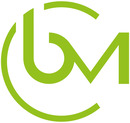

Affiliate Institutional Members

The Biomedical Center Munich (BMC) is striving to enhance the quality and reproducibility of its research through the adoption of Open Science practices. With a focus on improving experimental design, documentation, and data management, BMC aims to adhere to FAIR principles (Findable, Accessible, Interoperable, Re-usable). Initial efforts include raising awareness among researchers, training in doctoral programs, and evaluating the effectiveness of these measures. Current activities involve participation in Responsible Research Days and integration of Open Science concepts into doctoral programs. Looking ahead, BMC plans to implement Open Science practices institute-wide over the next five years, including creating guidelines and checklists for researchers. Collaboration with other biomedical institutes and the Open Science Center (OSC) is key to sharing experiences and fostering a campus-wide Open Science initiative.
Department of Statistics
The LMU department of statistics supports the goals of the OSC and wants to take on a leading role in fostering good research practices and promoting open science. We believe that statistics as a subject plays a major role in solving the reproducibility crisis and in working towards better, open research.
The IT-Gruppe Geisteswissenschaften is a Digital Humanities Competence- and Datacenter. It provides IT-infrastructure, plans, organizes and implements digital research & education. It also supports research data management services in cooperation with the Universitätsbibliothek (Open Access LMU und Open Data LMU). The ITG is committed to Open Access and FAIR data principles to ensure a maximum of availability, transparency, verifiability and sustainability of research software (including data, results, code). Activities in the context of open science are well documented by various DH-projects. Good examples are VerbaAlpina (geolinguistics, research data, methodology), KiT (innovative publication in the context of corpus linguistics) or DHVLab (digital research and teaching infrastructure for the humanities).
The fostering of research transparency and reproducibility, both in quantitative and qualitative research, is a stated goal of the Faculty of Psychology and Educational Science. We consider replicability and reproducibility of quantitative and qualitative research results as cornerstones of generalizability and reliability in science.
Faculty of Veterinary Medicine
Leibniz-Rechenzentrum (LRZ)
The Leibniz-Rechenzentrum supports the work of the LMU-OSC by providing infrastructures related to open science practices.

Scientific integrity is a core principle every researcher has to live up to every day. The LMU-ifo Economics & Business Data Center (EBDC), the joint research data center of the ifo Institute and the LMU Munich, supports students and researchers from Munich and beyond with this task. We, the EBDC team, offer guidance and courses on good scientific practices and research data management. In addition, researchers have the opportunity to archive their research data at EBDC and make it available for replication and secondary research projects in several ways. Furthermore in our accredited research data center, local and visiting researchers have the possibility to work in a secure, well-equipped and supervised environment with sensitive, access-restricted data sets either from external data holders or the ifo firm data. The cooperation with the Research Data Center of the Federal Statistical Office also makes it possible to access research data sets from German official statistics.
Faculty of Medicine
We are committed to the principles of good scientific practice as we consider replicability to be of utmost importance in both basic and translational research. As one of our Open Science initiatives, our Department of Radiation Oncology has established Radiation Oncology, a successful peer-reviewed Open Access journal which has already become one of the respected journals in its field (2015 journal impact factor 2.5).
The Munich Center for Neurosciences - Brain & Mind (MCN-LMU) and its teaching entity - the Graduate School of Systemic Neurosciences (GSN-LMU) - aim to link local research groups from all areas of the neurosciences. Through creating an interdisciplinary network of excellent research with strong international connections, MCN and GSN provide a stimulating environment for students and faculty to produce novel formulations of current concepts and theories. Since 2005, MCN and GSN have become the hub for neuroscience research and education in the Munich area. Our commitment to excellence sets high standards for researchers, who strive for quality and replicability. The Scientific Boards of MCN and GSN have long supported courses and events on responsible science and good scientific practice. At the institutional level, the most recent commitment to the LMU open science initiative will be enhanced by outreach and interdisciplinary dialogue, engaging GSN’s 147 faculty, more than 220 current students, as well as over 230 alumni, and 100 MCN members, respectively. Long-standing routines such as the Thesis Advisory Committees (TAC) for all doctoral researchers complement any further actions toward scientific integrity.
Universitätsbibliothek
The University Library supports Open Access and Open Science and offers a variety of related services for all LMU faculties.
No matching items